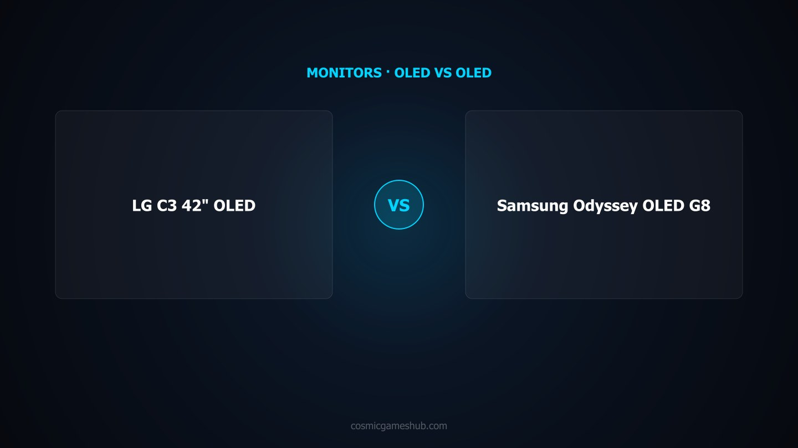

As an Amazon Associate I earn from qualifying purchases. Links below may earn us a commission at no extra cost to you.
Monitors · OLED TV-Monitor vs Ultrawide Gaming Display
LG C3 42" OLED vs Samsung Odyssey OLED G8 34": Which OLED Display Wins?
The LG C3 42" OLED sits at $799 and makes a bold case: it is LG's flagship OLED television in a size small enough for a desk, with four HDMI 2.1 ports, 4K 120Hz, G-Sync compatibility, Dolby Vision gaming support, and the deep blacks and infinite contrast ratio OLED is known for. The Samsung Odyssey OLED G8 34" comes in at $699 and argues from the other direction: it is a purpose-built PC gaming monitor with a QD-OLED panel at 3440x1440 ultrawide resolution, 175Hz refresh rate, 0.03ms response time, and a 1800R curve designed for desk use. These two displays share the OLED panel technology that delivers true blacks, but they are built for fundamentally different setups and use cases. Which one is right depends almost entirely on where and how you play.

Quick Verdict
Console + PC combo, 4K, living room → LG C3 42" · PC-only ultrawide, 175Hz competitive gaming → Samsung Odyssey OLED G8
The LG C3 42" is the more versatile display — four HDMI 2.1 ports make it the definitive console hub, 4K resolution with Dolby Vision support is best in class, and its WBRGB OLED panel delivers excellent HDR brightness at TV-size scale. At $799 it is arguably the best value screen available for anyone who splits time between console and PC. The Samsung Odyssey OLED G8 34" is the sharper PC gaming tool: 175Hz, QD-OLED with vivid color saturation, 3440x1440 ultrawide for immersive desktop gaming, and a 1800R curve designed specifically for a desk setup at arm's length. If your rig pushes high frame rates and you game exclusively on PC, the G8 earns its place. For everyone else — particularly console gamers and anyone wanting a do-everything OLED display — the LG C3 wins on raw versatility and value.
Head-to-Head: Category by Category
Image Quality
LG C3 — higher peak brightness, excellent HDR in a larger panel
Both displays deliver the core OLED promise: true black levels, infinite contrast ratio, and per-pixel lighting control that makes HDR content look genuinely different from LED panels. The LG C3's WBRGB OLED adds a white sub-pixel that contributes to higher overall panel brightness, helping it reach peak HDR brightness that holds up well in bright room conditions. The Samsung Odyssey OLED G8's QD-OLED panel produces notably more saturated, vivid colors — reds and greens in particular pop with a richness that the LG C3 does not match. For gaming, QD-OLED's color volume advantage is visible in games with vibrant environments. For movies and TV content, Dolby Vision on the LG C3 brings director-intended grading and metadata that makes a tangible difference in supported content. Both panels are exceptional. The G8's QD-OLED wins on color vibrancy; the C3 wins on HDR brightness ceiling and Dolby Vision support.
Gaming Performance
Samsung G8 — 175Hz and 0.03ms response time are class-leading
This is the Samsung Odyssey OLED G8's strongest category. At 175Hz with a 0.03ms GtG response time, it is among the fastest display experiences available at any technology or price level. For competitive PC gaming — first-person shooters, battle royales, fighting games — the combination of high refresh rate and near-instantaneous pixel response creates motion clarity and input responsiveness that 120Hz displays simply cannot match. The LG C3 at 120Hz is not slow by any objective measure, but once you have experienced 175Hz in a demanding title, 120Hz feels noticeably less fluid. The LG C3's 0.1ms response time is excellent but the Samsung's 0.03ms is measurably faster. For console gaming at 60Hz or 120Hz, the LG C3's ceiling is sufficient and the performance difference disappears. For PC competitive players who run 150fps+ regularly, the Samsung G8 wins this category decisively.
Console Compatibility
LG C3 — four HDMI 2.1 ports + Dolby Vision + native 4K
The LG C3 is purpose-built for multi-console households in a way the Samsung G8 is not. Four HDMI 2.1 ports supporting full 48Gbps bandwidth means you can connect a PS5, Xbox Series X, gaming PC, and a streaming device simultaneously without a switch — and each gets the full HDMI 2.1 specification: 4K 120Hz, VRR, ALLM. The Samsung Odyssey OLED G8 has a single HDMI 2.1 port, and its 3440x1440 native resolution means console content is displayed at a non-native resolution — the PS5 and Xbox output 4K, which must be downscaled. Additionally, the LG C3 supports Dolby Vision gaming from PS5 in supported titles, a feature the Samsung G8 does not offer. For PS5 or Xbox Series X users, the LG C3 is the correct choice by a wide margin. The Samsung G8 is a PC-first display with console connectivity as a secondary consideration.
Resolution & Screen Real Estate
Samsung G8 — ultrawide 3440x1440 at desk distances, higher pixel density
At 34" with 3440x1440 resolution, the Samsung Odyssey OLED G8 delivers a pixel density of approximately 109 PPI — noticeably sharper than the LG C3's 4K at 42", which works out to around 105 PPI. The difference is small in isolation but combined with the 1800R curve and desk-distance viewing, the G8 produces a crisp, detailed image that wraps around your peripheral vision in a way the flat 42" LG panel cannot replicate at a desk. The ultrawide 21:9 aspect ratio gives genuine benefits in PC gaming — games that support ultrawide fill your peripheral vision with game world rather than desktop bezels, making open-world, racing, and simulation titles noticeably more immersive. The LG C3's 4K resolution has more raw pixels but at 42" flat from a desk, the benefit of that resolution over the G8's 1440p ultrawide is debatable. For true desk use, the G8's combination of pixel density, curvature, and ultrawide aspect ratio creates a more cohesive gaming workspace.
Connectivity & Features
LG C3 — four HDMI 2.1, webOS smart TV platform, versatile input hub
The LG C3 is a fully featured smart TV in addition to being a gaming display, and that shows in its connectivity. Four HDMI 2.1 ports, a USB port, built-in webOS for streaming apps, Apple AirPlay 2, HomeKit, and Google Assistant are features you simply do not find on any dedicated monitor. The Samsung Odyssey OLED G8 is a purpose-built gaming monitor: it has HDMI 2.1 (one port), DisplayPort 1.4, USB-C with DisplayPort Alt Mode, and Samsung Gaming Hub for streaming, but it lacks the full smart TV ecosystem of the LG C3. For a living room setup or a hybrid gaming and entertainment space, the LG C3's smart TV capabilities remove the need for any additional streaming device. For a dedicated PC gaming desk, the G8's USB-C connectivity for laptop or secondary device use is a genuine practical advantage that the LG C3 does not offer in the same way.
Value
LG C3 — $799 for a 42" OLED with smart TV features is exceptional value
At $799, the LG C3 42" replaces both a gaming monitor and a streaming TV for most setups — the cost of a mid-tier monitor plus a streaming stick is already approaching this price. The sheer screen size, four HDMI 2.1 ports, and the full LG webOS smart TV platform make the value proposition difficult to argue with for anyone who wants a single display that does everything. The Samsung Odyssey OLED G8 at $699 is a competitive price for a 34" QD-OLED gaming monitor, but you are paying dedicated monitor money for a display that does one thing extremely well: PC gaming. The $100 price advantage of the Samsung does not close the value gap when the LG C3 offers a larger screen, more ports, and a full smart TV platform for only $100 more.
Spec Comparison
Spec
LG C3 42" OLED
Samsung Odyssey OLED G8 34"
Price
~$799
~$699
Panel Type
WBRGB OLED
QD-OLED
Resolution
3840x2160 (4K UHD)
3440x1440 (WQHD Ultrawide)
Aspect Ratio
16:9
21:9 (curved 1800R)
Refresh Rate
120Hz
175Hz
Response Time
0.1ms GtG
0.03ms GtG
HDR
Dolby Vision, HDR10, HLG
DisplayHDR True Black 400, HDR10+
HDMI 2.1 Ports
4x HDMI 2.1 (48Gbps)
1x HDMI 2.1
DisplayPort
No
DisplayPort 1.4
USB-C
No dedicated DP Alt Mode
Yes (DisplayPort Alt Mode)
VRR / FreeSync
G-Sync Compatible, VRR
FreeSync Premium Pro, G-Sync Compatible
Smart TV Platform
webOS (full smart TV)
Samsung Gaming Hub
Pixel Density
~105 PPI
~109 PPI
Best For
Console + PC versatility, 4K, living room
PC ultrawide gaming, 175Hz competitive
4 Key Differences
Key Difference 1
4x HDMI 2.1 vs 1x HDMI 2.1 — console connectivity is not close
The LG C3's four HDMI 2.1 ports are its single most decisive feature for multi-device households. You can connect a PS5, Xbox Series X, gaming PC, and a streaming device without a switch, all at full 4K 120Hz VRR simultaneously available via input selection. The Samsung G8's single HDMI 2.1 port makes it a one-console-at-a-time display. For anyone with more than one console or a console plus a PC, the LG C3 simply solves a problem the Samsung G8 doesn't address. For PC-only setups, this difference evaporates — one HDMI or DisplayPort is all you need.
Key Difference 2
175Hz vs 120Hz — 55Hz more headroom for competitive PC gaming
The 55Hz gap between these displays is meaningful in PC competitive gaming and noticeable in everyday desktop use. The Samsung G8 at 175Hz with 0.03ms response time is the faster display by a measurable margin — motion clarity, perceived input latency, and the smoothness of fast camera movements in games are all improved at 175Hz vs 120Hz. However, this advantage only materializes if your GPU can sustain frame rates above 120fps in the titles you play. On a mid-range GPU running demanding titles at medium settings, both displays will often be running at the same effective frame rate. The LG C3's 120Hz ceiling is only a limitation if you regularly exceed it in PC gaming; for console gaming it is irrelevant.
Key Difference 3
4K 16:9 vs 3440x1440 21:9 — resolution philosophy and use case
The resolution difference here is about more than pixel count — it is about workflow and setup. 4K 16:9 on the LG C3 is the universal standard: every console, streaming service, game, and video format is optimized for it. Ultrawide 3440x1440 on the Samsung G8 is PC-native and immersion-focused: games that support it wrap around your peripheral vision, and productivity users get more horizontal screen real estate without scaling issues. Neither is objectively better. 4K makes more sense for TV-distance viewing, console gaming, and content consumption. Ultrawide makes more sense for a dedicated PC gaming desk where horizontal immersion and workflow space are priorities.
Key Difference 4
QD-OLED vs WBRGB OLED — vivid color saturation vs Dolby Vision brightness
Samsung's QD-OLED produces more vivid, saturated colors thanks to quantum dot color conversion — particularly reds and greens achieve a richness that WBRGB OLED cannot fully replicate. For gaming with colorful environments, HDR gaming scenes, and high-contrast visual content, the G8's QD-OLED has a color character that stands out. LG's WBRGB OLED counters with Dolby Vision gaming support — a metadata-driven HDR format that brings per-scene tone mapping from PS5 titles and Dolby Vision streaming content, delivering a more controlled and accurate HDR presentation for movie and game content mastered in Dolby Vision. For pure color saturation, QD-OLED wins. For calibrated HDR fidelity and Dolby Vision content, WBRGB OLED with Dolby Vision support wins.
Which Should You Buy?
LG C3 42" OLED
~$799
Best for: Console gaming · Console + PC multi-device setups · 4K content · Living room dual-use · Dolby Vision users · Anyone wanting one display for everything
Yes — the LG C3 42" is a capable PC gaming monitor, but with caveats you need to understand before buying. It delivers stunning WBRGB OLED image quality at 4K with true black levels, near-zero burn-in risk on the LG OLED panel design, and G-Sync compatibility for tear-free gameplay. However, it tops out at 120Hz, which is lower than dedicated monitors at this price, and its pixel density at 42" is around 105 PPI — noticeably lower than a 27" or 32" monitor. For PC desktop use, you will want to sit further back than a typical monitor. If you use it on a desk closer than 3 feet, the lower PPI becomes apparent and text can look softer than a dedicated gaming monitor. For couch setups, sim racing, or immersive single-player PC gaming, it is an excellent choice. For competitive PC gaming where high frame rates and pixel clarity at close range matter, the Samsung Odyssey OLED G8 at 175Hz and higher PPI is the better tool.
OLED burn-in is a real phenomenon but far less of a practical concern than it was five years ago. Both the LG C3 and Samsung Odyssey OLED G8 include modern burn-in mitigation features: pixel shifting, panel refresh cycles, static logo detection, and automatic screen-off timers. LG's WBRGB OLED design uses a white sub-pixel that distributes luminance load and reduces wear on individual colored sub-pixels. Samsung's QD-OLED uses quantum dot color conversion, which also changes how the organic layer is stressed. For typical gaming use — sessions of 4–8 hours with varied content — burn-in risk is extremely low on both panels. The scenarios most likely to cause burn-in are static HUD elements displayed for thousands of hours without interruption. If you plan to use either display as an always-on secondary monitor showing static widgets or desktop wallpaper, a precautionary screen saver timer is wise. For gaming use, both OLEDs are considered safe by current standards.
QD-OLED and WBRGB OLED are two different engineering approaches to building an OLED display. Samsung's QD-OLED (Quantum Dot OLED) uses a blue OLED emitter layer as its backlight source, then passes light through a quantum dot color filter to produce red, green, and blue sub-pixels. This creates extremely saturated, vivid colors — particularly strong reds and greens — and the result is a wide color gamut that can exceed DCI-P3 coverage. LG's WBRGB OLED adds a white sub-pixel to the standard RGB arrangement. The white sub-pixel serves as a brightness booster, allowing LG OLED panels to reach higher peak brightness in HDR applications compared to QD-OLED at equivalent brightness settings. In practice: QD-OLED produces more vivid, saturated colors with excellent color volume; WBRGB OLED typically achieves higher peak brightness and has a slightly longer lifespan on the organic layer due to shared luminance load. For gaming monitors and TV-sized displays, both technologies deliver excellent OLED image quality — the difference is a matter of color character rather than one being definitively superior.
The LG C3 42" is the better choice for PS5. The primary reason is HDMI 2.1 bandwidth: the LG C3 has four HDMI 2.1 ports, all supporting the full 48Gbps bandwidth required for 4K 120Hz with VRR and HDR simultaneously. This means you get the PS5's full output — 4K, 120Hz, VRR, and Dolby Vision (for supported titles) — without any compromise. The Samsung Odyssey OLED G8 has only one HDMI 2.1 port, and its native 3440x1440 resolution does not match the PS5's 4K output, meaning the console must downscale or upscale. The LG C3's larger 42" screen also suits the typical TV-distance PS5 setup far better than the desk-sized Samsung. Additionally, the LG C3 supports Dolby Vision gaming from PS5, which Samsung's G8 does not. If you primarily use a PS5 or other console, the LG C3 is the clear recommendation.
Whether you notice the difference between 120Hz and 175Hz depends heavily on what you are playing and how sensitive you are to motion. In competitive multiplayer titles — first-person shooters, battle royales, fighting games — where frame-to-frame motion clarity and input latency directly affect performance, 175Hz provides a meaningfully smoother experience than 120Hz. The higher refresh rate reduces motion blur between frames, makes fast mouse movements feel more precise, and lowers perceived input lag. In single-player games, cinematic experiences, RPGs, strategy games, and console titles that target 60fps anyway, you will not notice any difference between 120Hz and 175Hz — the content is the bottleneck, not the display. The practical question is whether your PC can sustain frame rates above 120fps in the games you play. If your GPU regularly pushes 140–175fps, the Samsung G8's higher ceiling is meaningful. If you are on a mid-range GPU or play console, the 120Hz ceiling of the LG C3 is rarely a limiting factor.
Affiliate Disclosure: As an Amazon Associate I earn from qualifying purchases. Prices may vary.